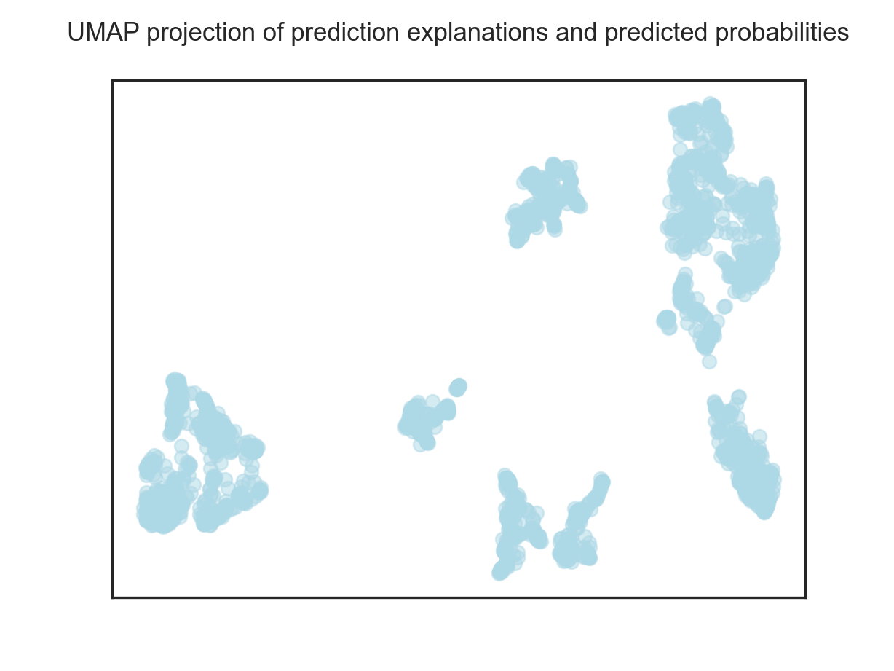
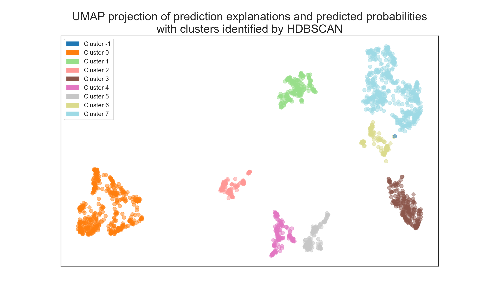
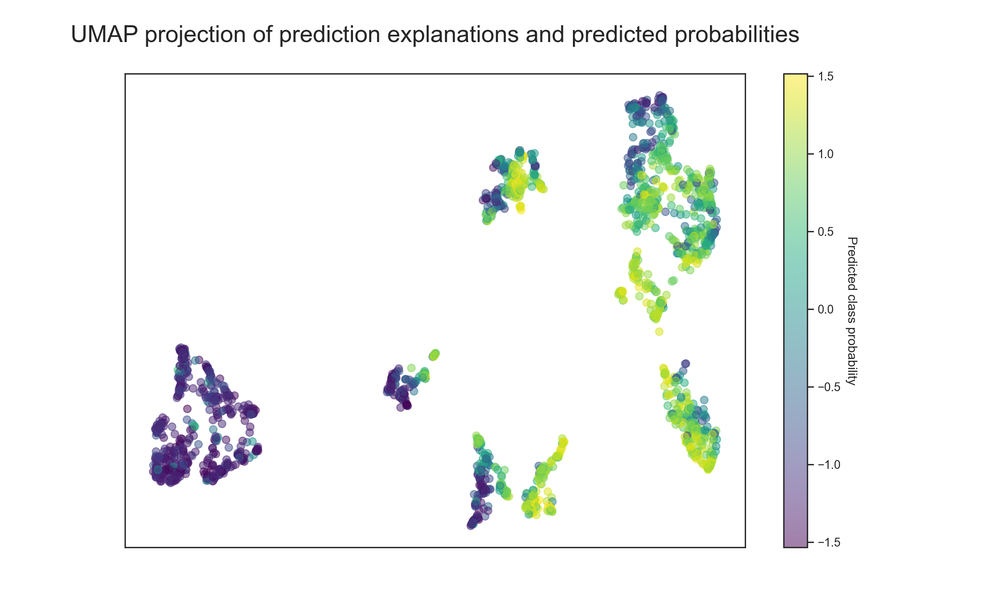

A demonstration of one method useful for sharing insights from fitted ML models.
There is one very useful but rather underutilized method of sharing insights from fitted ML models, at least in my socio-professional bubble.
It’s a method of identifying personas based on outputs from ML local interpretation algorithms, which provide information about the specific drivers of predictions for individual observations.
Its implementation is pretty straightforward:
Let’s see this in action using the Python code below. First, we need to create an artificial dataset on which we will demonstrate the method. We’ll create a classification dataset (imagine, for example, that we’re trying to predict sales performance based on some collaboration metrics, but feel free to imagine any scenario you like) and prepare a training and testing set to train our ML.
from sklearn.datasets import make_classification
from sklearn.model_selection import train_test_split
import pandas as pd
# defining the number of samples and features for the dataset
n_samples = 10000
n_features = 10
# creating the dataset
X, y = make_classification(n_samples=n_samples, n_features=n_features, n_informative=6, n_redundant=4, n_clusters_per_class=3, flip_y=0.27, class_sep=1, random_state=1979)
# creating a df with X and y as columns
df = pd.DataFrame(X, columns=['feature_{}'.format(i) for i in range(n_features)])
df['criterion'] = y
# splitting the dataset into training and test sets
X_train, X_test, y_train, y_test = train_test_split(X, y, test_size=0.2, random_state=1979)Now we can fit and fine-tune the XGBoost ML model.
from xgboost import XGBClassifier
from sklearn.model_selection import GridSearchCV
# fitting a XGBoost model with hyperparameter tuning and 10-fold cross-validation
# initializing the XGBoost classifier
xgb_model = XGBClassifier(random_state=1979)
# defining the parameter grid for hyperparameter tuning
param_grid = {
'n_estimators': [100, 200],
'max_depth': [3, 5, 7],
'learning_rate': [0.01, 0.1, 0.2]
}
# setting up the grid search with 10-fold cross-validation
grid_search = GridSearchCV(xgb_model, param_grid, cv=10, scoring='f1')
# fitting the model with hyperparameter tuning
grid_search.fit(X_train, y_train)GridSearchCV(cv=10,
estimator=XGBClassifier(base_score=None, booster=None,
callbacks=None, colsample_bylevel=None,
colsample_bynode=None,
colsample_bytree=None,
early_stopping_rounds=None,
enable_categorical=False, eval_metric=None,
gamma=None, gpu_id=None, grow_policy=None,
importance_type=None,
interaction_constraints=None,
learning_rate=None, max_bin=None,
max_cat_to_onehot=None,
max_delta_step=None, max_depth=None,
max_leaves=None, min_child_weight=None,
missing=nan, monotone_constraints=None,
n_estimators=100, n_jobs=None,
num_parallel_tree=None, predictor=None,
random_state=1979, reg_alpha=None,
reg_lambda=None, ...),
param_grid={'learning_rate': [0.01, 0.1, 0.2],
'max_depth': [3, 5, 7], 'n_estimators': [100, 200]},
scoring='f1')In a Jupyter environment, please rerun this cell to show the HTML representation or trust the notebook. GridSearchCV(cv=10,
estimator=XGBClassifier(base_score=None, booster=None,
callbacks=None, colsample_bylevel=None,
colsample_bynode=None,
colsample_bytree=None,
early_stopping_rounds=None,
enable_categorical=False, eval_metric=None,
gamma=None, gpu_id=None, grow_policy=None,
importance_type=None,
interaction_constraints=None,
learning_rate=None, max_bin=None,
max_cat_to_onehot=None,
max_delta_step=None, max_depth=None,
max_leaves=None, min_child_weight=None,
missing=nan, monotone_constraints=None,
n_estimators=100, n_jobs=None,
num_parallel_tree=None, predictor=None,
random_state=1979, reg_alpha=None,
reg_lambda=None, ...),
param_grid={'learning_rate': [0.01, 0.1, 0.2],
'max_depth': [3, 5, 7], 'n_estimators': [100, 200]},
scoring='f1')XGBClassifier(base_score=None, booster=None, callbacks=None,
colsample_bylevel=None, colsample_bynode=None,
colsample_bytree=None, early_stopping_rounds=None,
enable_categorical=False, eval_metric=None, gamma=None,
gpu_id=None, grow_policy=None, importance_type=None,
interaction_constraints=None, learning_rate=None, max_bin=None,
max_cat_to_onehot=None, max_delta_step=None, max_depth=None,
max_leaves=None, min_child_weight=None, missing=nan,
monotone_constraints=None, n_estimators=100, n_jobs=None,
num_parallel_tree=None, predictor=None, random_state=1979,
reg_alpha=None, reg_lambda=None, ...)XGBClassifier(base_score=None, booster=None, callbacks=None,
colsample_bylevel=None, colsample_bynode=None,
colsample_bytree=None, early_stopping_rounds=None,
enable_categorical=False, eval_metric=None, gamma=None,
gpu_id=None, grow_policy=None, importance_type=None,
interaction_constraints=None, learning_rate=None, max_bin=None,
max_cat_to_onehot=None, max_delta_step=None, max_depth=None,
max_leaves=None, min_child_weight=None, missing=nan,
monotone_constraints=None, n_estimators=100, n_jobs=None,
num_parallel_tree=None, predictor=None, random_state=1979,
reg_alpha=None, reg_lambda=None, ...)
# getting the best estimator
best_xgb_model = grid_search.best_estimator_The classification performance metrics below show that the fitted model performs well on the test data, so we can safely proceed further.
from sklearn.metrics import classification_report, roc_auc_score
import numpy as np
# predictions on the test set
y_pred = best_xgb_model.predict(X_test)
y_pred_proba = best_xgb_model.predict_proba(X_test)[:, 1]
# classification report
report = classification_report(y_test, y_pred)
print(report) precision recall f1-score support
0 0.81 0.78 0.80 977
1 0.80 0.83 0.81 1023
accuracy 0.81 2000
macro avg 0.81 0.80 0.80 2000
weighted avg 0.81 0.81 0.80 2000# ROC AUC score
roc_auc = roc_auc_score(y_test, y_pred_proba)
print('ROC AUC score: ', np.round(roc_auc, 2))ROC AUC score: 0.85Now we will generate LIME explanations for each observation in the testing dataset and standardize them for later analysis and visualization (including the predicted probabilities of the positive class).
import lime.lime_tabular
from sklearn.preprocessing import StandardScaler
# using LIME for local interpretation
# initializing the LIME explainer
explainer = lime.lime_tabular.LimeTabularExplainer(
training_data=X_train,
feature_names=['Feature_{}'.format(i) for i in range(X_train.shape[1])],
class_names=['Low Performance', 'High Performance'],
mode='classification',
random_state=1234
)
# df for storing the LIME explanations for all observation
explanations_df = pd.DataFrame()
feature_names = df.columns[:-1].tolist()
# generating LIME explanations for each observation in the test set
for i in range(X_test.shape[0]):
# predicted probability for the positive class
predicted_class_proba = y_pred_proba[i]
# generating the LIME explanation
exp = explainer.explain_instance(X_test[i], best_xgb_model.predict_proba, num_features=X_train.shape[1])
exp_list = exp.as_list()
feature_values = {name: 0 for name in feature_names}
# looping through the employee's conditions and updating feature_values accordingly
for condition, value in exp_list:
for feature_name in feature_names:
if feature_name in condition.lower():
feature_values[feature_name] = value
break
# adding the predicted probability for the positive class
feature_values['predicted_class_proba'] = predicted_class_proba
supp_df = pd.DataFrame(feature_values, index=[0])
explanations_df = pd.concat([explanations_df, supp_df], ignore_index=True)
# standardizing all features (including the probability for the positive class)
scaler = StandardScaler()
explanations_scaled = scaler.fit_transform(explanations_df)
explanations_scaled_df = pd.DataFrame(explanations_scaled)
explanations_scaled_df.columns = explanations_df.columnsUsing the UMAP 2D projection of the prediction explanations and predicted probabilities, we can see that that are several clusters of observations with similar predicted probabilities and their drivers.
import umap
import matplotlib.pyplot as plt
import seaborn as sns
sns.set_theme(style="white")
# visualizing the personas using UMAP
# initializing and fitting UMAP
reducer = umap.UMAP(n_components=2, n_neighbors=50, min_dist=0.01, metric='euclidean', random_state=1979, n_jobs=1)
embedding = reducer.fit_transform(explanations_scaled)
# plotting the explanations and predicted probability in 2D scatterplot
plt.close()
scatter = plt.scatter(embedding[:, 0], embedding[:, 1], c='lightblue', s=50, alpha=0.5)
plt.title('UMAP projection of prediction explanations and predicted probabilities\n', fontsize=13)
plt.tick_params(axis='x', which='both', bottom=False, top=False, labelbottom=False)
plt.tick_params(axis='y', which='both', left=False, right=False, labelleft=False)
plt.show()
A clustering algorithm, such as HDBSCAN, can help us identify clusters.
import hdbscan
import matplotlib.patches as mpatches
# HDBSCAN clustering
model = hdbscan.HDBSCAN(min_cluster_size=2)
clusterer = hdbscan.HDBSCAN(min_cluster_size=25, min_samples=10, cluster_selection_epsilon=0.3, prediction_data=True)
clusterer.fit(embedding)HDBSCAN(cluster_selection_epsilon=0.3, min_cluster_size=25, min_samples=10,
prediction_data=True)In a Jupyter environment, please rerun this cell to show the HTML representation or trust the notebook. HDBSCAN(cluster_selection_epsilon=0.3, min_cluster_size=25, min_samples=10,
prediction_data=True)clusters = clusterer.labels_
# adding the cluster labels to the dataframe
explanations_scaled_df['cluster'] = clusters
explanations_df['cluster'] = clusters
# plotting the clusters
plt.close()
cmap = plt.cm.get_cmap('tab20')
norm = plt.Normalize(clusters.min(), clusters.max())
scatter = plt.scatter(embedding[:, 0], embedding[:, 1], c=clusters, s=50, cmap=cmap, norm=norm, alpha=0.5)
patches = [mpatches.Patch(color=cmap(norm(i)), label=f'Cluster {i}') for i in np.unique(clusters)]
plt.legend(handles=patches, fontsize=12)
plt.title('UMAP projection of prediction explanations and predicted probabilities\nwith clusters identified by HDBSCAN', fontsize=22)
plt.tick_params(axis='x', which='both', bottom=False, top=False, labelbottom=False)
plt.tick_params(axis='y', which='both', left=False, right=False, labelleft=False)
plt.show()
There seem to be about eight clusters and some outliers (cluster -1). Let’s look at how they differ in terms of predicted probabilities. There appear to be four clusters that have increased (clusters 3, 5, 6, and 7) and decreased predicted probabilities (clusters 0, 2, and 4), respectively, and one cluster with more mixed predictions (cluster 1).
import matplotlib.colorbar as colorbar
# plotting the distribution of probability of positive classes
plt.close()
scatter = plt.scatter(embedding[:, 0], embedding[:, 1], c=explanations_scaled_df['predicted_class_proba'], cmap='viridis', s=50, alpha = 0.5)
plt.title('UMAP projection of prediction explanations and predicted probabilities\n', fontsize=22)
plt.tick_params(axis='x', which='both', bottom=False, top=False, labelbottom=False)
plt.tick_params(axis='y', which='both', left=False, right=False, labelleft=False)
cbar = plt.colorbar(scatter)
cbar.set_label('Predicted class probability', rotation=270, labelpad=15)
plt.show()
Now we can check for the selected clusters which features and in which direction most affect their respective predicted probabilities. For example, we can see from the table below that the clusters with lower predicted probabilities (clusters 0, 2 and 4) are driven either by the respective values in features 6 and 9 (cluster 0), or by the respective values in features 0, 3, 7 and 9 (cluster 2), or by the respective values in feature 0 (cluster 4).
library(DT)
library(tidyverse)
library(reticulate)
tab1 <- py$explanations_df %>%
dplyr::group_by(cluster) %>%
dplyr::summarise_all(~median(., na.rm = TRUE))
DT::datatable(
round(tab1,2),
class = 'cell-border stripe',
filter = 'top',
extensions = 'Buttons',
fillContainer = FALSE,
rownames= FALSE,
options = list(
pageLength = 10,
autoWidth = TRUE,
dom = 'Bfrtip',
buttons = c('copy'),
scrollX = TRUE,
selection="multiple"
)
) %>%
formatStyle(
names(tab1 %>% dplyr::select(-cluster, -predicted_class_proba)),
background = styleColorBar(range(tab1 %>% dplyr::select(-cluster, -predicted_class_proba)), 'lightblue'),
backgroundSize = '98% 90%',
backgroundRepeat = 'no-repeat',
backgroundPosition = 'center'
) Combined with information on the median values of these specific features, we can get a good idea of the people who tend to under-perform and “why”. For example, people in cluster 0 score too high in feature 6 and too low in feature 9; people in cluster 2 score too low in features 0, 3, 7 and 9; and people in cluster 4 score too low in features 0. Given these differences, it would be useful to consider different approaches to try to improve the sales performance of people based on information about which person they belong to. We could also repeat a similar analysis for clusters with higher predicted probabilities to see which combination of features tends to be associated with higher performance.
# creating a df with X and y from testing part of the dataset
df_test = pd.DataFrame(X_test, columns=['feature_{}'.format(i) for i in range(n_features)])
df_test['predicted_class_proba'] = predicted_class_proba
df_test['cluster'] = clusterstab2 <- py$df_test %>%
dplyr::group_by(cluster) %>%
dplyr::summarise_all(~median(., na.rm = TRUE))
DT::datatable(
round(tab2,2),
class = 'cell-border stripe',
filter = 'top',
extensions = 'Buttons',
fillContainer = FALSE,
rownames= FALSE,
options = list(
pageLength = 10,
autoWidth = TRUE,
dom = 'Bfrtip',
buttons = c('copy'),
scrollX = TRUE,
selection="multiple"
)
) %>%
formatStyle(
names(tab2 %>% dplyr::select(-cluster, -predicted_class_proba)),
background = styleColorBar(range(tab2 %>% dplyr::select(-cluster, -predicted_class_proba)), 'lightblue'),
backgroundSize = '98% 90%',
backgroundRepeat = 'no-repeat',
backgroundPosition = 'center'
) I hope you’ll find the method described here useful in one of your ML projects. Happy data sleuthing 🙂